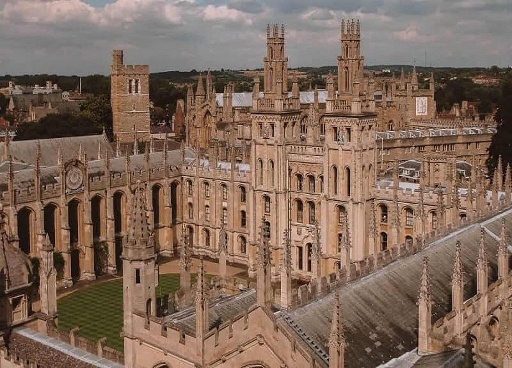

|
UNIVERSITY |
|||||
|
UNIVERSITY |
|||||
| Home | AboutUs | Gallary | Acadmic | CollegeVacencies | ContectUs |
| BLACK FRIAES BRASENOSE COLLEGE France support and international academic community and postgraduate hatents(aged Zur abs) frum different background and religion traditions,all of whom value our left athes Undergraduates may chudy theelegy and religion philosophy and theology Rhey ariantal studies, or philosphy,politics and scenomica Our stay in the backdrians hell e informed by a common life friendship dengsite the common friars of blackfrairs priory,and theas training for the priesthood in blackfriars The dennes religion order of the catholic church, first to the oxford university in 1221 end returend in 1921 The hull time domainan hit on to engage with contemporrary thought by participation in the life and work of a merdere university that is committed to excellence in the and red against species in the thought of St Thomas Against items release The Las Coss Enitiate promotes critical reflection on question of share or techung halagy tur atudents enjoy access to special lectures by distinguished wates and to conference offered by The institutes |
|
| CHRIST CHURCH CORPUS CHRISTI COLLEGE Boosting small sause of community and a friendly atmosphers,christ church corpus christi Salleges and if the exferde alder and smaller college it prides itself on the diversity of its Students background,with a strong traditions of opennes ainence and fairness.All this help to make the allege unanually well integrated and supportive. Corp 5 from The city enter and Bodleian libreary and only 10 minutes from the ence laboratories,but turked away from the mice at the city locking out ever christ church dow winds the river.The college offers all the its students a room for the normal duration of their auruly,first-year students live in the college students in other year con live an the mon sits or close by The Iddelt building and recent lamp building about 15 minutes away from the clage he shared ficts with the communal kitchens and dining areas.Some roome own enente dower and WC.Their is also accommedation for students with mobility difficulties |
|
| ORIAL COLLEGE Orda case acedemic community with a friendly atmosphere.Like other colleges,we value drsity and encourage uppilation from broght students of all backgrounds.We also recognise rhe ring fancial needs of stundets today and ofer bursaries,prizes for outstanding soderic eckiwmwnts,generous travel grants and access to hardship funds. The tutors at arial taken a keen intreet in the endmic development of their students not only morough their regular intrections the trials but also through encouraging students to relate Their work to and angage with, the rich programmes of research active in the coolege and the rest of the universites.Arial prepare for the their lives and corsers,we werk to help our undergraduates shives the highest andemice stondered Ech term arial hold joint academicforums to which all memebers of the role are topics and patatine from an interdisciplinary perspective |
|
| JESUS COLLEGE Je alegered for its clean community where academic excellence is central to college life simte opffer mar shidents The best posable education and opportunities during their time here,and as a result we have recently been voted best college for atudents arification Each year we and a larg number of the acholarships,prizes and grants to recognise achievemnt and progress,and to support music sports and travel. The college has always had walsh connections,through our students now come from all over the US and others countries Locations college is in tur street right in the heart of the oxford versity,dese to the science area,shape, cinemes and theaters.The college offer at its students a room for the normal duration of Their courses usually,first- year students in the college students in ether year can live on the main site or close by.The ude,building and fecent lamp building about 15 minutes away from the college,have shared Plats with the communal, Kitchens and dining areas,ndS. |
|
| LADY MARGARET HALL LINCOLN COLLEGE sets enjoy all the benifits of a traditional suford educaion within a worm,open and ferment,we have aleate egaal mambers of men women among our tutors,our undergraduates and our gradutes.Our students work with internationally datinguished to tutorial Teaching and he welfare support Bursaries, condemic awards and scholarship are available to abkle herd-working students to achieve their academic perential.We are accesible to those with mobility problems LMH has an exceptionally beautiful site with yardens which run down to the river.We are besides the university parks, a 5-mutes walk to the cience and about 15 minutes on foot(5minutes by bycycle) from the city center.undergraduates and guaranteed a room on the college site for three years of their courses.some rowns and ally large and the majority are ensuite,all have wireless internet connections. |
|
| SOME OTHERS COLLEGES | |
|---|---|
|  |
| ContectUs: | |||||||
| phone number:8384034783,2354672354 | Home | AboutUs | Gallary | Acadmic | CollegeVacencies | ContectUs | |
| email adress:extension@gamil.com | |||||||
| copyright@2021 |